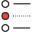

<mat-sidenav-container class="sidenav-container">
  <mat-sidenav #drawer class="sidenav" fixedInViewport="true"
      [attr.role]="(isHandset$ | async) ? 'dialog' : 'navigation'"
      [mode]="(isHandset$ | async) ? 'over' : 'side'"
      [opened]="!(isHandset$ | async)">
    <mat-toolbar class="centro">Menu</mat-toolbar>
    <mat-nav-list>
      <a mat-list-item href="#"><mat-icon>list</mat-icon> List of Animes</a>
      <a mat-list-item href="#"><mat-icon>add</mat-icon> Register Anime</a>
      <a mat-list-item href="#"><mat-icon>search</mat-icon> Search Anime</a>
    </mat-nav-list>
  </mat-sidenav>
  <mat-sidenav-content>
    <mat-toolbar color="primary">
      <button
        type="button"
        aria-label="Toggle sidenav"
        mat-icon-button
        (click)="drawer.toggle()"
        *ngIf="isHandset$ | async">
        <mat-icon aria-label="Side nav toggle icon">menu</mat-icon>
      </button>
      <span class="logo"> <span class="titulo"> Anime List Angular</span></span>
    </mat-toolbar>
    <!-- Add Content Here -->
  </mat-sidenav-content>
</mat-sidenav-container>
